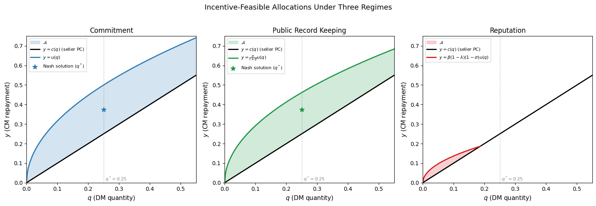
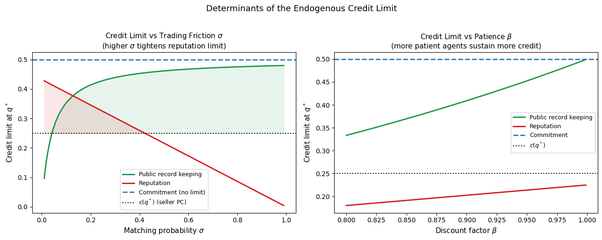
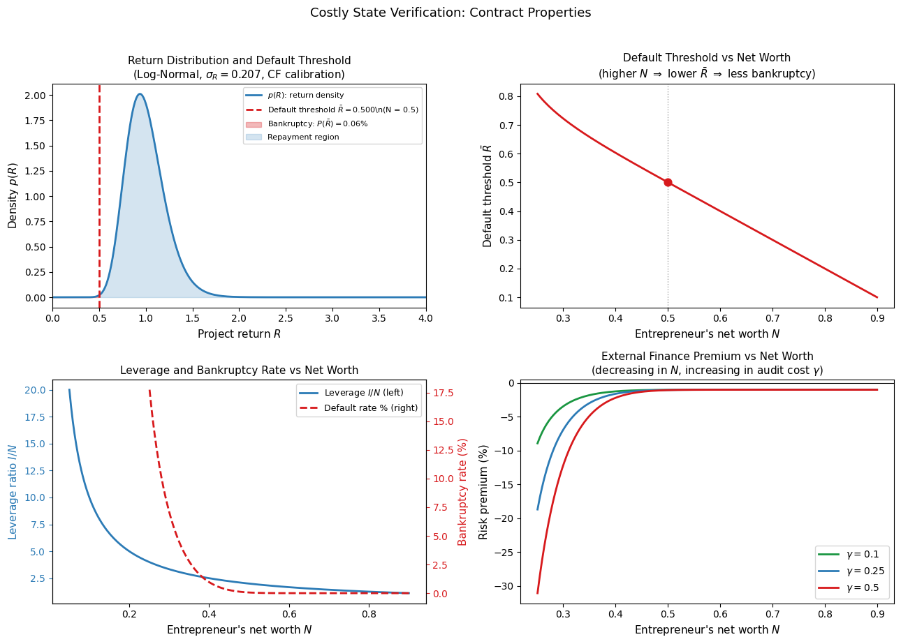
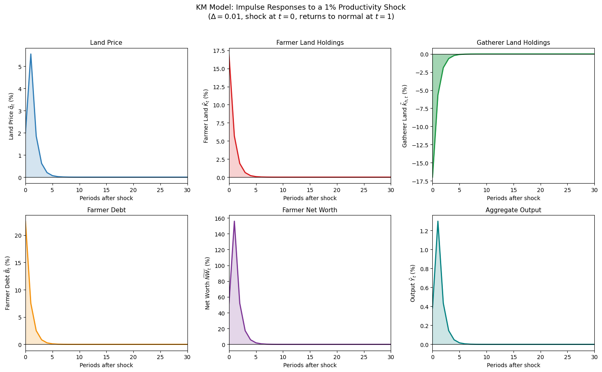
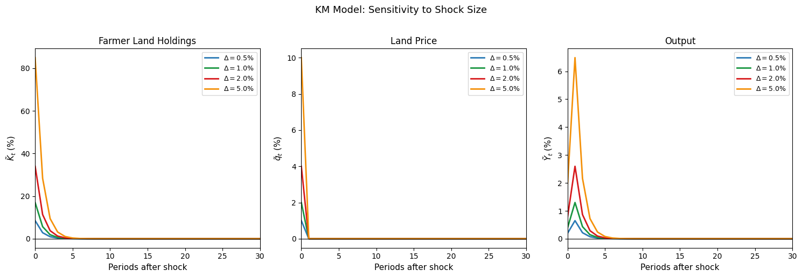
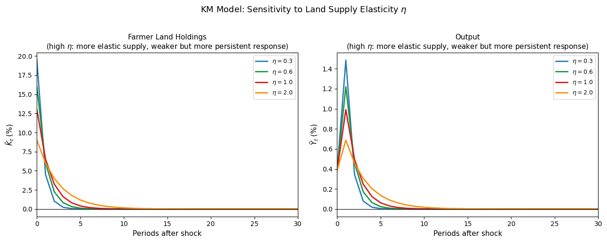

Financial Frictions in Macroeconomics#
Introduction#
A central question in macroeconomics is why financial markets matter for real economic activity. In the Arrow-Debreu benchmark, financial markets are a veil: they redistribute resources across agents and states of the world, but the allocation of real goods is determined entirely by preferences, technology, and endowments. Financial variables — interest rates, credit spreads, asset prices, net worth — have no independent role in determining investment, output, or employment.
This benchmark is useful as a starting point, but it abstracts from features of real financial markets that appear to matter enormously in practice. The 2008 global financial crisis, the credit crunch of the early 1990s, and the COVID-19 recession all exhibited a common pattern: disruptions originating in financial markets propagated into the real economy with an amplitude and persistence that standard models without financial frictions could not account for. Understanding why this happens — and what policy can do about it — requires models in which financial frictions have real effects.
Three Sources of Financial Frictions#
The literature identifies three fundamental sources of financial frictions, each generating a distinct class of models:
1. Search frictions. Finding a trading partner in financial markets is costly and time-consuming, just as in labor markets. Over-the-counter (OTC) markets for bonds, derivatives, and interbank lending are characterized by bilateral bargaining between counterparties who must first locate one another. The search-and-bargaining framework developed for labor markets extends naturally to these settings, generating a theory of credit as an equilibrium outcome of decentralized bilateral trade.
2. Asymmetric information. Borrowers typically know more about the quality of their projects than lenders do. This information asymmetry creates a moral hazard problem: absent monitoring, borrowers may misreport returns, divert funds, or take excessive risk. The lender’s response — designing a contract that incentivizes truthful reporting while minimizing costly auditing — generates endogenous credit frictions even when both parties would prefer a frictionless outcome.
3. Limited enforcement. Lenders cannot always compel borrowers to repay. If a borrower can walk away from a debt obligation, taking their human capital and inalienable skills with them, the lender’s recourse is limited to seizing collateral. This limited enforcement generates borrowing constraints tied to asset values — and creates a powerful amplification mechanism when asset prices are endogenous.
The modern literature on financial frictions in macroeconomics has its roots in three foundational contributions:
Townsend (1979) introduced the costly state verification (CSV) framework, showing that when lenders must pay an auditing cost to observe a borrower’s realized return, the optimal contract takes the form of a standard debt contract with a fixed repayment and bankruptcy in default.
Bernanke and Gertler (1989) and Carlstrom and Fuerst (1997) embedded CSV into dynamic macroeconomic models to study the amplification and propagation of aggregate shocks through the credit channel. The key mechanism — sometimes called the financial accelerator — is a feedback loop: negative shocks reduce entrepreneurial net worth, which raises the cost of external finance, which depresses investment, which further reduces net worth in subsequent periods.
Bernanke, Gertler, and Gilchrist (1999) (BGG) extended this framework into a quantitative New Keynesian DSGE model, providing the benchmark for a generation of empirical and policy-oriented work on financial frictions.
Kiyotaki and Moore (1997) (KM) developed an alternative model in which the source of frictions is limited enforcement rather than asymmetric information. Durable assets serve simultaneously as factors of production and as collateral for borrowing, so that shocks to asset prices tighten credit constraints, reduce investment, and further depress asset prices — generating endogenous credit cycles.
Roadmap#
This lecture develops all three frameworks in detail. We begin with the pure credit economy of Lagos and Wright, which provides a clean laboratory for understanding how the degree of commitment and the quality of record keeping determine the set of implementable credit arrangements. We then develop the CSV framework — from the microeconomic contract design problem through to the Carlstrom-Fuerst and BGG macroeconomic models. We close with the Kiyotaki-Moore model of collateral constraints, deriving the equilibrium analytically and simulating the model’s impulse responses to a productivity shock.
Throughout, we emphasize the common structure underlying the three frameworks: each identifies a friction that drives a wedge between the private and social returns to investment, generates an endogenous link between financial conditions and real activity, and provides an amplification mechanism through which shocks to financial variables propagate into the broader economy. The nature of the friction — search costs, information asymmetry, or limited enforcement — determines the form of the optimal contract, the character of the amplification, and the appropriate policy response.
The table below summarizes the three frameworks along the dimensions that matter most for their macroeconomic implications.
Framework |
Source of friction |
Key contract |
Amplification mechanism |
|---|---|---|---|
Search and bargaining |
Search costs, lack of commitment |
Nash bargained credit |
Endogenous borrowing limit tied to trading frequency |
CSV (BG, CF, BGG) |
Asymmetric information |
Standard debt contract |
Financial accelerator via net worth |
Collateral (KM) |
Limited enforcement |
Collateralized debt |
Asset price-credit constraint feedback |
The three frameworks are complementary rather than competing. Each captures a distinct aspect of real financial markets, and a complete model of financial frictions would incorporate all three. The search-and-bargaining framework is most natural for interbank and OTC markets; the CSV framework is most appropriate for corporate borrowing and bank lending; the collateral constraint framework is most relevant for real estate, land, and other asset-backed lending. Understanding each framework separately is the necessary first step toward integrating them.
Search and Bargaining in a Pure Credit Economy#
Motivation#
The Arrow-Debreu model assumes that agents can costlessly write and enforce complete contingent contracts at the beginning of time. Real credit markets depart from this benchmark along several dimensions simultaneously: agents may not be able to commit to repaying debts; the actions of debtors may not be perfectly observable; finding a trading partner is costly; and agents may not want to trade the same goods at the same time. Understanding how credit operates when these frictions are present — and how the degree of commitment and the quality of record keeping determine what credit arrangements are sustainable — is the subject of this section.
We study a pure credit economy based on the Lagos-Wright (2005) framework, in which agents trade bilaterally in a decentralized market (DM) and settle accounts in a centralized market (CM). The environment is stripped to its essentials: no money, no capital, no aggregate shocks. Its virtue is that it isolates the role of commitment and record keeping in sustaining credit, producing sharp results about what allocations are achievable under different institutional assumptions.
Environment#
Timing and Markets#
Time is discrete and infinite. Each period is divided into two stages:
Decentralized market (DM): a subset of agents can produce but do not wish to consume (sellers), while others wish to consume but cannot produce (buyers). A buyer meets a seller with probability \(\sigma \in (0,1]\), capturing the extent of trading frictions — when \(\sigma = 1\), frictions are absent and every buyer meets a seller. The lack of a double coincidence of wants means that spot trade is impossible: buyers have nothing to offer sellers in the DM, generating a need for some means of payment or credit.
Centralized market (CM): all agents can produce and consume in a competitive frictionless market. Debts incurred in the DM are settled here.
Preferences and Technology#
Let \(q \in \mathbb{R}_+\) denote the DM good and \(x \in \mathbb{R}_+\) the CM good. The buyer’s and seller’s period utility functions are:
where \(u(q)\) is the buyer’s utility from consuming \(q\) units of the DM good, \(c(q)\) is the seller’s cost of producing \(q\) units, and \(y\) is the disutility of producing the CM good. We assume \(u' > 0\), \(u'' < 0\), \(c' > 0\), \(c'' \geq 0\), and the standard regularity conditions \(u(0) = c(0) = 0\). The efficient quantity \(q^*\) maximizes the gains from trade:
All goods are non-storable — they cannot be carried across periods — so the only way for a buyer to compensate a seller for DM production is through a promise to deliver CM goods in the future. This is the credit arrangement we analyze.
The Credit Arrangement#
A credit arrangement works as follows. In the DM, a buyer who meets a seller proposes an allocation \((q, y)\): the seller produces \(q\) units of the DM good now, and the buyer promises to produce \(y\) units of the CM good later in the same period. The arrangement requires the seller to trust that the buyer will honor the promise — trust that depends on the degree of commitment and the availability of record keeping.
We analyze three institutional environments in increasing order of realism:
Full commitment: buyers always honor their promises.
No commitment with public record keeping: buyers may default, but a public record of all trades is available to punish deviators.
No commitment, no record keeping, with reputation: credit is sustained through repeated bilateral relationships.
Credit with Full Commitment#
Value Functions#
When buyers can commit, the only constraints on the credit arrangement are participation constraints: both parties must weakly prefer to trade rather than remain unmatched. The expected lifetime utility of a buyer and seller, evaluated at the beginning of a period, are:
Solving these forward:
Participation Constraints and Incentive Feasibility#
A buyer accepts the allocation \((q, y)\) if the surplus from trading is non-negative: \(u(q) - y \geq 0\). A seller accepts if \(-c(q) + y \geq 0\). Since agents revert to being unmatched (not autarky) if they reject, the participation constraints evaluated at the time of matching are:
The set of incentive-feasible allocations under commitment is:
This is simply the set of allocations where both parties gain from trade. Since \(q^*\) satisfies \(u'(q^*) = c'(q^*)\) and we assume \(u(q^*) > c(q^*)\), the efficient allocation lies in the interior of \(\mathcal{A}^C\) — full commitment always supports the first-best outcome.
Nash Bargaining Solution#
The proposed allocation \((q, y)\) is determined by generalized Nash bargaining, where \(\alpha \in [0,1]\) is the buyer’s bargaining power:
subject to \(u(q) - y \geq 0\) and \(y - c(q) \geq 0\). The solution is:
The joint surplus \(u(q^*) - c(q^*)\) is maximized by trading the efficient quantity, and then divided: the buyer retains fraction \(\alpha\) and the seller receives fraction \(1-\alpha\). With full commitment, the credit economy achieves the first-best allocation for any bargaining power \(\alpha \in (0,1)\).
Strategic Default and Public Record Keeping#
Introducing Default#
We now drop the assumption of full commitment. A buyer who has consumed the DM good may choose to default on the promised CM payment \(y\) rather than produce it. Default is strategically rational whenever the short-run gain from not producing outweighs the long-run cost of losing access to credit.
To sustain credit in the absence of commitment, we need a punishment mechanism. We assume that a public record-keeping technology records all trades:
where \(i\) indexes matches. This record is available to all agents at the end of the CM. If any deviation from the proposed allocation is detected, all agents revert to autarky permanently — the global punishment strategy. Autarky means no access to the DM, so a deviating buyer loses the entire future stream of DM surplus.
Chronology of Events#
At the beginning of the DM, a measure \(\sigma\) of buyers and sellers are randomly matched.
In each match, an allocation \((q, y)\) is proposed and simultaneously accepted or rejected.
If accepted, the seller produces \(q\) units of the DM good for the buyer.
In the CM, the buyer chooses to honor the debt (produce \(y\) units for the seller) or default (produce nothing and face permanent autarky).
The public record \([q(i), y(i)]\) is published, and agents decide whether to continue or revert to autarky.
Participation and Incentive Constraints#
Since deviators revert to autarky — not merely being unmatched — the participation constraints are now evaluated against an autarky outside option of zero:
The critical new constraint is the buyer’s incentive constraint: after consuming the DM good, the buyer must prefer to honor the debt rather than default and face autarky. At the moment of repayment, the buyer compares:
Honor: produce \(y\) and continue trading, yielding \(-y + \beta V^b\).
Default: produce nothing but face permanent autarky, yielding \(\beta \cdot 0 = 0\).
The buyer honors the debt if and only if:
Substituting \(V^b = \sigma[u(q)-y]/(1-\beta)\) into (9) and simplifying using \(r = \beta^{-1} - 1\):
The left-hand side is the present value of future DM surplus — what the buyer stands to lose by defaulting. The right-hand side is the one-time gain from not repaying. The buyer honors the debt when the future is valuable enough relative to the current repayment.
The seller’s participation constraint (8) reduces, after substituting \(V^s\), to the same condition as under commitment:
The Incentive-Feasible Set#
Combining (10) and (11), the set of incentive-feasible allocations with public record keeping is:
Comparing \(\mathcal{A}^{PR}\) to \(\mathcal{A}^C\): the upper bound on \(y\) has fallen from \(u(q)\) to \(\frac{\sigma}{r+\sigma}u(q) < u(q)\). This tighter upper bound is the endogenous credit limit imposed by the buyer’s incentive constraint: the seller cannot extract more than the present value of the buyer’s future DM surplus.
The set \(\mathcal{A}^{PR}\) expands — more allocations become feasible — when:
\(\sigma\) increases (lower trading frictions): more frequent trade raises the value of maintaining credit access, relaxing the incentive constraint.
\(r\) decreases (more patient agents): a lower discount rate raises the value of future DM surplus relative to current default gains.
The efficient allocation \(q^*\) is achievable if and only if:
When trading frictions are severe (low \(\sigma\)) or agents are impatient (high \(r\)), condition (13) may fail and the economy is constrained to \(q < q^*\) — financial frictions reduce the quantity traded below the first-best level.
Take-It-or-Leave-It Bargaining#
Under take-it-or-leave-it offers by the buyer (the limiting case \(\alpha = 1\)), the buyer maximizes their surplus subject to the seller’s participation constraint (11) and their own incentive constraint (9):
The solution is:
In the unconstrained case, the buyer extracts all the surplus and pays only the seller’s cost. In the constrained case, the credit limit \(\beta V^b\) binds and the buyer is forced to trade less than \(q^*\). Substituting \(V^b\):
The efficient allocation is supported if and only if:
which is precisely condition (13) for \(\alpha = 1\). When constrained, \(q\) solves \(c(q) = \frac{\sigma u(q)}{r + \sigma}\), pinning down the constrained quantity traded as a function of the trading friction \(\sigma\) and the discount rate \(r\).
Credit with Reputation#
Motivation#
We now consider the most restrictive institutional environment: no commitment and no public record keeping. Without a public record, the global punishment strategy is unavailable — a defaulting buyer cannot be identified and excluded from the market by agents other than their current trading partner. Credit must instead be sustained through bilateral reputation: repeated interactions within a long-term partnership, where the seller can punish a defaulting buyer by terminating the relationship.
Environment#
We augment the model with match creation and destruction:
At the end of each period, an existing match is destroyed with probability \(\lambda \in (0,1)\) — an exogenous separation shock.
Agents in destroyed matches return to the matching pool and find a new partner with probability \(\sigma\).
Agents can also choose to end a match voluntarily — this is the seller’s punishment instrument.
The timing within each period is:
Existing matches either continue or are exogenously destroyed with probability \(\lambda\).
Unmatched agents search and find a partner with probability \(\sigma\).
Matched agents propose and accept/reject an allocation \((q, y)\).
If accepted, the seller produces \(q\) in the DM.
In the CM, the buyer chooses to honor or default; a defaulting buyer loses the current partner permanently.
Value Functions#
Let \(V_e^b\) (\(V_u^b\)) denote the value of a matched (unmatched) buyer, and \(V_e^s\) (\(V_u^s\)) the corresponding values for sellers:
A matched buyer enjoys DM consumption \(u(q)\) and repays \(y\) in the CM; the match survives with probability \(1-\lambda\) and is destroyed with probability \(\lambda\), returning the buyer to the unmatched pool. An unmatched buyer finds a seller with probability \(\sigma\) and remains unmatched with probability \(1-\sigma\).
From these value functions, one can show:
The surplus from being matched relative to unmatched is positive if and only if the flow payoff from the match is positive — exactly the participation constraints \(u(q) - y \geq 0\) and \(-c(q) + y \geq 0\).
Equilibrium Conditions#
An allocation \((q, y)\) is implementable as an equilibrium if three conditions hold.
Participation constraints (agents accept new matches): $\(V_e^b \geq \beta V_u^b, \qquad V_e^s \geq \beta V_u^s \tag{20, 21}\)$
Continuation constraints (existing partners prefer to continue): $\(V_e^b \geq V_u^b, \qquad V_e^s \geq V_u^s \tag{22, 23}\)$
Conditions (22) and (23) imply (20) and (21), so the binding constraints are (22) and (23), which reduce to \(u(q) - y \geq 0\) and \(-c(q) + y \geq 0\) using equations (18) and (19).
Buyer’s incentive constraint (the buyer honors the debt):
After consuming the DM good, the buyer compares honoring the debt — \(-y + \beta[\lambda V_u^b + (1-\lambda)V_e^b]\) — to defaulting and losing the partner permanently — \(\beta V_u^b\). Honoring is optimal if:
Substituting equation (18):
The credit limit now depends on three parameters: patience \(\beta\), match stability \(1-\lambda\), and market frictions \(1-\sigma\). Crucially, the credit limit is tighter when \(\sigma\) is high or \(\lambda\) is high: when new partners are easy to find or matches are fragile, the threat of losing the current partner carries little weight and the buyer’s incentive to repay is weak.
The Incentive-Feasible Set with Reputation#
Combining the participation constraints and the buyer’s incentive constraint, the set of incentive-feasible allocations with reputation is:
The set \(\mathcal{A}^R\) is empty when \(\lambda = 1\) (all matches are destroyed each period, so the threat of termination has no value) or when \(\sigma = 1\) (new partners are found instantly, so losing the current partner costs nothing). Credit relationships are viable only when matches are sufficiently stable and sufficiently difficult to replace.
The efficient allocation \(q^*\) is implementable through reputation if and only if:
Condition (27) is more restrictive than the public record-keeping condition (13): reputation alone supports less credit than a public punishment mechanism, because the punishment under reputation — losing one partner — is weaker than the punishment under public record keeping — losing access to all future trade.
Comparing the Three Regimes#
The three institutional environments generate a nested hierarchy of incentive-feasible sets:
Better institutions — stronger commitment, better record keeping — expand the set of implementable credit arrangements. The differences between the three sets reflect the tightness of the endogenous credit limit:
Under commitment: the credit limit is \(y \leq u(q)\) — the buyer can promise up to the full value of the DM good.
Under public record keeping: the credit limit is \(y \leq \frac{\sigma}{r+\sigma}u(q)\) — the buyer can promise only the present value of future DM surplus.
Under reputation: the credit limit is \(y \leq \beta(1-\lambda)(1-\sigma)u(q)\) — the buyer can promise only the discounted value of the match surplus, weighted by match stability and market frictions.
Numerical Illustration#
Efficient quantity q* = 0.2500
u(q*) = 0.5000, c(q*) = 0.2500
Joint surplus u(q*)-c(q*) = 0.2500


Credit limits at q* under baseline parameters:
σ=0.5, β=0.96, λ=0.1, r=0.0417
u(q*) = 0.5000 (commitment upper bound)
σ/(r+σ)*u(q*) = 0.4615 (public record keeping)
β(1-λ)(1-σ)*u(q*) = 0.2160 (reputation)
c(q*) = 0.2500 (seller PC lower bound)
Efficient trade feasible?
Under commitment: Yes
Under public record: Yes
Under reputation: No
The top figure shows the incentive-feasible sets under each institutional regime in \((q, y)\) space. Under commitment (left panel), the feasible region spans the full gap between \(c(q)\) and \(u(q)\), and the Nash bargaining solution achieves \(q^*\). Under public record keeping (middle panel), the upper boundary tightens to \(\frac{\sigma}{r+\sigma}u(q)\), shrinking the feasible region; whether \(q^*\) remains achievable depends on the parameters. Under reputation (right panel), the upper boundary tightens further to \(\beta(1-\lambda)(1-\sigma)u(q)\), and the feasible region may exclude the efficient allocation entirely.
The bottom figure shows how the credit limits vary with the trading friction \(\sigma\) and the discount factor \(\beta\). The reputation credit limit (red) is decreasing in \(\sigma\): paradoxically, better matching technology reduces the sustainability of credit through reputation, because easier access to new partners weakens the punishment from losing the current partner. The public record keeping limit (green) is increasing in \(\sigma\): more frequent trade raises the value of maintaining access to the market, relaxing the buyer’s incentive constraint. Both limits are increasing in \(\beta\): more patient agents place greater weight on the future and are therefore more willing to honor current obligations.
Conclusion#
This section has shown that the set of implementable credit arrangements depends critically on the institutional environment. Full commitment supports the first-best allocation regardless of market structure. Without commitment, the sustainability of credit depends on the frequency of trade, agents’ patience, and the stability of matches — all of which determine the value of maintaining a reputation for repayment. These results provide the microeconomic foundations for the financial friction models developed in the following sections: the endogenous borrowing constraints that emerge from the reputation model are the primitive from which the macroeconomic models of CSV and collateral constraints are built.
Financial Frictions from Asymmetric Information: Costly State Verification#
Overview#
The pure credit economy of the previous section assumed that the seller could observe whether the buyer honored the debt. In many real financial relationships this assumption fails: a firm knows the return on its investment project, but a bank does not — and verifying the true return requires costly auditing. This information asymmetry creates a moral hazard problem. Without monitoring, the borrower may claim a low return to avoid repayment even when the true return is high. The lender’s problem is to design a contract that incentivizes truthful reporting while minimizing the social waste from costly auditing.
This section develops the costly state verification (CSV) framework introduced by Townsend (1979), which provides the microeconomic foundations for the financial friction in the Bernanke-Gertler (1989), Carlstrom-Fuerst (1997), and Bernanke-Gertler-Gilchrist (1999) models. We proceed in three steps: the optimal contract under CSV, the Carlstrom-Fuerst (CF) model of how CSV generates amplification and propagation of aggregate shocks, and the BGG extension into a quantitative New Keynesian framework.
The CSV Problem#
Environment#
There are two types of agents: entrepreneurs who have investment projects but insufficient funds, and lenders who have funds but no projects. An entrepreneur has net worth \(N\) but requires investment \(I > N\), so must borrow \(I - N\) from a lender. The project yields a random gross return \(R\), distributed on \([0, \infty)\) with density \(p(R)\) and mean 1, observable only by the entrepreneur. The lender can verify the true \(R\) by paying an auditing cost \(\gamma > 0\) — think of this as the cost of bankruptcy proceedings, legal fees, or financial due diligence.
The information asymmetry creates a moral hazard problem: without monitoring, the entrepreneur has an incentive to claim \(R\) is low and withhold repayment even when the true return is high. The optimal contract must deter such misreporting while minimizing the expected auditing cost.
The Revelation Principle#
Before characterizing the optimal contract, we invoke a fundamental result from mechanism design:
The Revelation Principle
Any outcome that can be implemented by some mechanism can also be implemented by an incentive-compatible direct mechanism — one in which each agent truthfully reports their private information. It therefore suffices to restrict attention to contracts under which the entrepreneur truthfully reports \(R\).
Intuition for the Revelation Principle
Suppose the lender uses a set of rules \(M\) that maps entrepreneurs’ reports \(\hat{R}\) to outcomes. An entrepreneur with true return \(R\) may have an incentive to misreport \(\hat{R}(R) \neq R\) to obtain a better outcome. The lender can anticipate this optimal misreporting strategy \(\hat{R}(R)\) and design an alternative mechanism \(M'\) that maps the true report \(R\) to the same outcome that \(\hat{R}(R)\) would have produced under \(M\). Under \(M'\), the entrepreneur has no incentive to misreport — the mechanism already accounts for their strategic behavior — so truth-telling is a best response. The revelation principle says we lose no generality by restricting to such truth-telling mechanisms.
The Optimal Contract#
A contract specifies, for each reported return \(\hat{R}\):
An audit probability \(y(\hat{R}) \in [0,1]\).
A payment to the lender \(R_l(\hat{R})\) if no audit occurs.
A payment to the lender \(R_l(\hat{R}, R)\) if an audit occurs.
The entrepreneur’s payoff is \(w_0 = R - R_l(\hat{R})\) without audit and \(w_1 = R - R_l(\hat{R}, R)\) with audit. The entrepreneur’s expected payoff for reporting \(\hat{R}\) when the true return is \(R\) is:
The optimal contract maximizes the entrepreneur’s expected income subject to incentive compatibility (the entrepreneur reports truthfully) and the lender’s participation constraint (the lender breaks even):
Since the lender’s participation constraint (3) must bind — otherwise the entrepreneur could improve by offering a slightly less favorable contract — it can be substituted into the objective to give an equivalent problem of minimizing expected auditing costs:
subject to the incentive compatibility constraint (2).
The Standard Debt Contract#
Theorem: Optimality of the Standard Debt Contract
When \(y(R) \in \{0,1\}\) (auditing is either done or not), the solution to the optimal contract problem is a standard debt contract: there exists a threshold \(D\) such that:
If \(R \geq D\): no audit, the entrepreneur repays \(D\) and keeps \(R - D\).
If \(R < D\): audit, the lender receives the full return \(R\) and the entrepreneur receives zero.
Proof Sketch
The argument proceeds in two steps.
Step 1: No audit when the entrepreneur can repay. The problem (4) minimizes expected auditing costs. Auditing is wasteful — it costs \(\gamma\) and reveals nothing that a truthful report would not. The optimal contract therefore minimizes the set of states in which auditing occurs. Since the lender needs total receipts of \(I - N\) in expectation, auditing should be concentrated in states where the entrepreneur cannot repay a fixed amount \(D\) — i.e., when \(R < D\).
Step 2: The threshold is a fixed payment. When there is no audit, the entrepreneur reports \(\hat{R}\) and pays \(R_l(\hat{R})\). For the entrepreneur to report truthfully, the payment \(R_l(\hat{R})\) must be independent of \(\hat{R}\) — otherwise, the entrepreneur would always report the \(\hat{R}\) that minimizes \(R_l(\hat{R})\). A constant payment \(R_l = D\) is therefore necessary for incentive compatibility without audit.
Combining: the optimal contract specifies a fixed repayment \(D\) when \(R \geq D\) (no audit), and confiscation of the full return \(R\) when \(R < D\) (audit with bankruptcy). This is exactly a standard debt contract.
The threshold \(D\) is determined by the lender’s break-even condition:
The left-hand side is the lender’s expected receipts: in bankruptcy states (\(R < D\)), the lender receives \(R\) net of auditing cost \(\gamma\); in non-bankruptcy states (\(R \geq D\)), the lender receives the fixed repayment \(D\). Condition (5) says these expected receipts must cover the loan \(I - N\).
The implicit interest rate on the loan is \(1 + r^k = D/(I-N)\): the fixed repayment \(D\) equals the principal plus interest. Note that \(r^k > r\) — the entrepreneur pays a risk premium above the risk-free rate to compensate the lender for expected auditing costs in bankruptcy states.
The Carlstrom-Fuerst (CF) Model#
Overview#
Carlstrom and Fuerst (1997) embed the CSV financial friction into a dynamic general equilibrium model to study how financial conditions affect the economy’s response to aggregate shocks. Their key insight — the financial accelerator — is that a shock which reduces entrepreneurial net worth increases borrowing needs, which raises agency costs, which depresses investment, which further reduces net worth in subsequent periods. This feedback generates amplification and persistence beyond what standard RBC models produce.
Environment#
There are three types of agents:
Households: supply labor, consume, and save by accumulating capital, which they rent to firms.
Entrepreneurs: transform consumption goods into capital using a stochastic technology, but require external finance.
Firms: produce consumption goods from capital and labor using a standard production function \(Y_t = A_t F(K_t, H_t, H^e_t)\).
There are two types of goods: consumption goods and capital goods. Entrepreneurs create capital — they are the investment sector of the economy.
Technology and Financial Friction#
An entrepreneur endowed with net worth \(n_t\) invests \(i_t > n_t\) units of consumption goods. The investment project transforms \(i_t\) consumption goods into \(R_t i_t\) units of capital, where \(R_t\) is an idiosyncratic shock distributed i.i.d. across entrepreneurs and time with density \(p(R)\), support \([0,\infty)\), and mean 1. The return \(R_t\) is privately observed by the entrepreneur; the lender can verify it by paying audit cost \(\gamma i_t\) (proportional to project size).
By the CSV result, the optimal contract specifies a default threshold \(\bar{R}_t\) such that:
where \(r^k_t\) is the interest rate on the loan. The entrepreneur defaults when \(R_t < \bar{R}_t\) and repays when \(R_t \geq \bar{R}_t\).
The Financial Contract#
The optimal contract maximizes the entrepreneur’s expected payoff subject to the lender’s break-even constraint:
where \(q_t\) is the end-of-period price of capital, which the entrepreneur takes as given. The left-hand side of (7) is the lender’s expected receipts per unit investment times the capital price: in bankruptcy the lender gets \(R - \gamma\) (full return less audit cost); in non-bankruptcy the lender gets \(\bar{R}_t\).
The Linear Investment Rule#
The first-order conditions to (6)-(7) yield a linear investment rule:
where \(\varphi(q_t) > 1\) is the leverage ratio — the multiple of net worth that the entrepreneur can invest. The leverage ratio is increasing in \(q_t\): a higher capital price raises the value of the collateral, reduces the expected default probability \(P(\bar{R})\), lowers borrowing costs, and allows the entrepreneur to borrow more.
The linear investment rule (8) has two important implications:
Amplification through net worth: investment is proportional to net worth. Any shock that reduces \(n_t\) — directly reducing productive capacity — also reduces investment through the financial friction channel, generating a multiplier effect on aggregate output.
Aggregation: since individual investment is linear in individual net worth, aggregate investment is simply \(\varphi(q_t) N_t\) where \(N_t\) is aggregate net worth, making the model tractable.
The aggregate capital supply schedule is:
where the term in brackets accounts for auditing costs. This schedule is upward-sloping in \(q_t\) (higher capital price expands investment supply) and shifts outward with \(N_t\) (higher net worth reduces agency costs).
The entrepreneur’s return on internal funds is:
The internal rate of return exceeds 1 due to agency costs: entrepreneurs earn a premium on their internal funds because of the financial friction.
Households and the Euler Equation#
Households consume, supply labor, and hold capital. Their Euler equation for capital is:
where the gross return to holding one unit of capital from \(t\) to \(t+1\) is:
Entrepreneurs#
Entrepreneurs are risk neutral and less patient than households: \(\beta^E < \beta^H\). Their Euler equation is:
where \(\rho(q_{t+1})\) is the return on internal funds. The discount factor difference \(\beta^E < \beta^H\) ensures that entrepreneurs are net borrowers in equilibrium — they are more eager to invest today relative to households, generating demand for external finance.
Aggregate capital demand is jointly determined by (10) and (11): households require a return \(R^k_{t+1}\) that satisfies their Euler equation, while entrepreneurs require that the amplified return \(R^k_{t+1}\rho(q_{t+1})\) covers their discount rate. The financial friction drives a wedge between the two Euler equations through \(\rho > 1\).
Calibration#
The model is calibrated at the non-stochastic steady state to match empirical counterparts:
Parameter |
Value |
Target |
|---|---|---|
\(\beta^H\) |
0.99 |
4% annual real interest rate |
Capital share |
0.36 |
US national accounts |
Entrepreneurial labor share |
0.0001 |
Small but positive |
Depreciation \(\delta\) |
0.02 |
Standard quarterly value |
Audit cost \(\gamma\) |
0.25 |
Liquidation cost of bankruptcy |
Return std dev \(\sigma_R\) |
0.207 |
Bankruptcy rate of 0.974% |
\(\gamma\) (refined) |
0.947 |
Risk premium of 187 basis points |
The bankruptcy rate of 0.974% and the risk premium of 187 basis points (the average spread between the prime rate and three-month commercial paper) are the two financial moments that discipline the parameters \(\sigma_R\) and \(\gamma\) of the idiosyncratic return distribution.
Impulse Responses#
The CF model produces two main results, illustrated in the figures below.
Shock to entrepreneurial net worth. In a standard RBC model, the source of investment financing is irrelevant — a transfer of wealth from households to entrepreneurs has no aggregate effect. With financial frictions, a positive shock to \(N_t\) reduces the need for external finance, lowering agency costs and shifting the investment supply curve rightward. Investment rises, the capital price falls, and output increases through higher labor demand.


Technology shock. In the standard RBC model, a positive technology shock raises investment, labor, and output in proportion. With financial frictions, the shock has an additional channel: higher productivity raises the return on internal funds \(\rho(q_{t+1})\), which increases entrepreneurial net worth in subsequent periods. This net worth feedback shifts the investment supply curve rightward for multiple periods after the shock, generating a hump-shaped response of investment — investment peaks several periods after the shock rather than on impact. Output and hours inherit this hump-shaped pattern through the capital accumulation equation.


The Bernanke-Gertler-Gilchrist (BGG) Model#
Extensions Over CF#
Bernanke, Gertler, and Gilchrist (1999) build on CF by embedding the CSV financial friction into a quantitative New Keynesian DSGE model. The goal is to assess the quantitative importance of financial frictions for business cycle dynamics and monetary policy transmission. BGG add three features absent from CF:
1. Nominal rigidities and monetary policy. BGG introduce sticky prices and a monetary policy rule, allowing the model to address the interaction between credit market frictions and monetary policy. A monetary tightening raises the real cost of debt service, reducing entrepreneurial net worth and triggering the financial accelerator — providing a credit channel for monetary policy transmission absent from models without financial frictions.
2. Investment adjustment costs. BGG introduce convex costs of adjusting the capital stock:
where \(\Phi(\cdot)\) satisfies \(\Phi' > 0\), \(\Phi'' < 0\), and \(\Phi(\delta/K) = \delta\). The investment sector maximizes profits:
This generates endogenous variation in Tobin’s \(q\) — the price of installed capital relative to consumption goods — which amplifies the financial accelerator by creating a feedback between investment, capital prices, and net worth.
3. Heterogeneous firms. BGG model a continuum of entrepreneurs with heterogeneous idiosyncratic shocks, generating differential access to external finance across firms. This captures the empirical observation that small, highly leveraged firms are more sensitive to credit conditions than large, well-capitalized ones.
The Financial Accelerator in BGG#
As in CF, the optimal CSV contract yields a linear investment rule:
where \(R_{t+1}\) is the risk-free rate. Capital expenditures are proportional to net worth and increasing in the expected excess return to capital — when the return to capital is expected to exceed the risk-free rate, entrepreneurs expand borrowing and investment. The external finance premium \(\mathbb{E}_t[R^k_{t+1}]/R_{t+1} - 1 > 0\) is the risk premium that borrowers pay above the risk-free rate to compensate lenders for expected auditing costs. It is decreasing in net worth: better-capitalized entrepreneurs face lower agency costs and smaller risk premiums.
The financial accelerator works as follows. A negative shock reduces \(n_t\), which by (14) reduces investment \(I_t\) and lowers the capital price \(q_t\) through (13). The lower \(q_t\) further reduces net worth — since entrepreneur’s wealth is partly held in capital — triggering another round of declining investment. This feedback loop amplifies the initial shock and generates persistence through the net worth dynamics:
Net worth tomorrow depends on the return to capital times total investment minus debt repayment. A shock that reduces \(R^k_{t+1}\) or raises \(R_{t+1}\) (through monetary tightening) reduces net worth in subsequent periods, extending the financial distress beyond the initial shock period.
Four Shocks in the BGG Model#
BGG analyze four types of aggregate disturbances:
Monetary policy shock: an unanticipated one-time increase in the short-term interest rate. The financial accelerator amplifies the contractionary effect by raising debt service costs and reducing net worth, triggering a decline in investment that outlasts the monetary shock itself.
Technology shock: qualitatively similar to CF but quantitatively larger due to investment adjustment costs and the interaction with nominal rigidities.
Government expenditure shock: a demand shock whose effects are amplified through the net worth channel.
Financial shock (wealth redistribution): a direct transfer of wealth from households to entrepreneurs, which reduces external finance needs and lowers risk premiums — a direct financial conditions shock with no counterpart in models without financial frictions.


Numerical Illustration: The CSV Contract#
The following code illustrates the key properties of the CSV optimal contract: how the default threshold \(\bar{R}\), the risk premium, and the leverage ratio vary with net worth and the auditing cost.
c:\Users\XPS\AppData\Local\Programs\Python\Python312\Lib\site-packages\scipy\stats\_distn_infrastructure.py:2996: IntegrationWarning: The occurrence of roundoff error is detected, which prevents
the requested tolerance from being achieved. The error may be
underestimated.
lbc = integrate.quad(fun, lb, c, **kwds)[0]
c:\Users\XPS\AppData\Local\Programs\Python\Python312\Lib\site-packages\scipy\stats\_distn_infrastructure.py:2997: IntegrationWarning: The occurrence of roundoff error is detected, which prevents
the requested tolerance from being achieved. The error may be
underestimated.
cd = integrate.quad(fun, c, d, **kwds)[0]
c:\Users\XPS\AppData\Local\Programs\Python\Python312\Lib\site-packages\scipy\stats\_distn_infrastructure.py:2998: IntegrationWarning: The occurrence of roundoff error is detected, which prevents
the requested tolerance from being achieved. The error may be
underestimated.
dub = integrate.quad(fun, d, ub, **kwds)[0]

CSV Contract at N = 0.5, γ = 0.25:
Default threshold: R_bar = 0.5002
Bankruptcy rate: P(R_bar) = 0.059%
Lender receipts: 0.5000 = I-N = 0.5000
Leverage ratio: phi = 2.0000
Risk premium: -1.0295%
The top-left panel shows the return distribution and the default threshold \(\bar{R}\) for a representative entrepreneur with net worth \(N = 0.5\). The red shaded region is the bankruptcy region — states in which the project return falls short of the debt obligation. The bankruptcy rate is printed in the legend and should match the CF calibration target of approximately 0.974%.
The top-right panel shows how the default threshold \(\bar{R}\) falls with net worth: entrepreneurs with more internal funds need to borrow less, so the promised repayment \(D = \bar{R} I\) is lower and default occurs only in more adverse states. This is the mechanism through which net worth determines credit conditions.
The bottom-left panel shows leverage and the bankruptcy rate jointly. Both are decreasing in net worth: better-capitalized entrepreneurs borrow less, face lower default probabilities, and impose smaller expected auditing costs on lenders. This is the financial accelerator in cross-section: entrepreneurs with higher net worth obtain cheaper external finance, consistent with the empirical finding that credit spreads are negatively correlated with borrower net worth.
The bottom-right panel shows the external finance premium — the risk premium above the risk-free rate that borrowers pay — as a function of net worth, for three values of the auditing cost \(\gamma\). The premium is decreasing in net worth and increasing in \(\gamma\): better-capitalized entrepreneurs and lower monitoring costs both reduce the friction. As \(N \to I\) (the entrepreneur can self-finance entirely), the premium approaches zero — consistent with the Arrow-Debreu benchmark.
Conclusion#
The CSV framework provides rigorous microeconomic foundations for the financial friction in macro models. The optimal contract under asymmetric information is a standard debt contract — the ubiquitous form of financial contract in practice — and the agency costs embedded in this contract create a direct link between entrepreneurial net worth and investment. The financial accelerator emerges naturally from this link: shocks that reduce net worth raise agency costs, depress investment, and further reduce net worth in subsequent periods, generating amplification and persistence beyond what standard models produce. The BGG extension quantifies these effects in a full DSGE framework and shows that financial frictions substantially amplify the macroeconomic effects of monetary policy, technology, and financial shocks.
Financial Frictions from Limited Enforcement: Collateral Constraints#
Overview#
The CSV framework of the previous section generates financial frictions through asymmetric information: lenders cannot observe project returns without paying an audit cost. Kiyotaki and Moore (1997) (KM) propose a fundamentally different source of friction — limited enforcement. Even if lenders can perfectly observe what borrowers earn, they may not be able to force repayment. A borrower who defaults takes their human capital with them; the lender’s only recourse is to seize the physical collateral pledged against the loan.
This seemingly small departure from the Arrow-Debreu benchmark generates a powerful amplification and persistence mechanism. When durable assets — land in the KM model — serve simultaneously as factors of production and collateral for borrowing, shocks that reduce asset prices tighten borrowing constraints, depress investment, further reduce asset prices, and so on. The economy exhibits endogenous credit cycles: financial conditions fluctuate in response to productivity shocks, and these fluctuations feed back into real activity in ways that a model with unconstrained borrowing could never generate.
The microfoundations for the KM borrowing constraint are provided by Hart and Moore (1994), who show that when human capital is inalienable — borrowers cannot credibly commit to applying their skills and effort to repay a debt — the maximum sustainable debt is limited to the liquidation value of the pledged collateral. We take this constraint as given and analyze its macroeconomic implications.
Environment#
Agents and Assets#
Time is discrete and infinite. There are two types of agents:
Farmers (entrepreneurs) of unit mass: borrow to invest in land, which serves as both a productive asset and collateral.
Gatherers (workers/savers) of mass \(m\): lend to farmers and hold land as a pure investment.
There is one durable asset — land — in fixed supply \(\bar{K}\), trading in a competitive spot market at price \(q_t\). There is one non-durable consumption good, produced from land by both farmers and gatherers.
Production Technologies#
Farmers and gatherers have different production technologies, generating a reason for trade:
Farmers produce according to: $\(y_{t+1} = (a + c)k_t\)$
where \(k_t\) is the farmer’s land holding. Output consists of two parts:
Tradeable output \(ak_t\): can be sold in the market.
Non-tradeable output \(ck_t\): consumed directly by the farmer (think of bruised fruit that cannot be transported without spoiling). This non-tradeable component is crucial: it means farmers cannot fully pledge their future output as collateral, since \(c k_t\) cannot be seized by a lender.
Gatherers produce according to:
where \(G\) is increasing and strictly concave — diminishing returns to land for gatherers. Gatherers are more patient than farmers: \(\beta_h > \beta\). This patience difference ensures that farmers are net borrowers and gatherers are net lenders in equilibrium.
The Borrowing Constraint#
Farmers and gatherers trade in one-period credit contracts. If a farmer borrows \(b_t\) at the beginning of period \(t\), they must repay \(R_t b_t\) at the beginning of period \(t+1\), where \(R_t\) is the gross interest rate.
The collateral constraint limits the farmer’s borrowing to the market value of their land at the time of repayment:
The economic rationale follows from limited enforcement. If a farmer defaults, the lender can seize the land — worth \(q_{t+1} k_t\) — but cannot compel the farmer to work or deliver the non-tradeable output. The lender therefore never lends more than the collateral value, ensuring the borrowing constraint (1) is always satisfied with non-negative equity. In equilibrium, impatience drives farmers to borrow as much as possible, so (1) binds.
The Farmer’s Problem#
The farmer maximizes expected lifetime consumption subject to the budget constraint, the non-negativity constraint on consumption, and the borrowing constraint:
The budget constraint (4) says that expenditure — new land purchases \(q_t(k_t - k_{t-1})\), debt repayment \(R_{t-1}b_{t-1}\), and consumption \(x_t\) — equals income from production \((a+c)k_{t-1}\) plus new borrowing \(b_t\).
First-Order Conditions#
Let \(\varphi_t\), \(\lambda_t\), and \(\mu_t\) denote the multipliers on constraints (3), (4), and (5) respectively. The first-order conditions are:
Eliminating the budget constraint multiplier \(\lambda_t = 1 + \varphi_t\) from equations (6)-(8) gives the farmer’s optimality conditions:
Interpreting the Optimality Conditions
In the absence of binding constraints (\(\varphi_t = \mu_t = 0\)), these reduce to standard asset pricing conditions:
Equation (9): the price of the bond (normalized to 1) equals the stochastic discount factor \(\beta\) times the bond payoff \(R_t\) — the standard Euler equation for a risk-free bond.
Equation (10): the price of land equals the discounted sum of its flow benefit \((a+c)\) and continuation value \(q_{t+1}\) — the standard asset pricing equation for a productive durable asset.
The non-zero multipliers \(\mu_t\) and \(\varphi_t\) introduce wedges into both conditions. The multiplier \(\mu_t > 0\) on the borrowing constraint means the farmer values relaxing that constraint — they would invest more if they could borrow more. The multiplier \(\varphi_t > 0\) on the consumption floor means the farmer is constrained in how little they can consume — the non-tradeable output \(ck_{t-1}\) must be consumed and cannot be pledged.
The Gatherer’s Problem#
The gatherer maximizes:
Gatherers face no borrowing constraint: since \(\beta_h > \beta\), gatherers are lenders (\(b_{h,t} < 0\) in equilibrium) and lenders face no enforcement problem. The first-order conditions yield the gatherer’s optimality conditions:
Equation (13) pins down the interest rate: \(R_t = 1/\beta_h\) — the risk-free rate equals the gatherer’s discount rate. Equation (14) is the gatherer’s land pricing equation: the price of land equals the discounted marginal product plus the discounted continuation value.
Market Clearing and Equilibrium#
Market clearing in the bond and land markets requires:
Summing the farmer and gatherer budget constraints and imposing (15)-(16) gives the aggregate resource constraint:
An equilibrium is the tuple \(\{x_t, x_{h,t}, k_t, k_{h,t}, b_t, q_t, \mu_t, \varphi_t\}\) satisfying the eight conditions (9), (10), (4), (5), (14), (17), (16), and (3).
Steady State#
In steady state all variables are constant: \(K_t = K\), \(B_t = B\), \(q_t = q\). Setting \(R = 1/\beta_h\) from (13) and solving the steady-state system yields:
Interpreting the Steady State
These three conditions have clean economic interpretations:
Equation (18): the farmer’s required down payment per unit of land — the fraction of the land price that cannot be financed by borrowing — equals the farmer’s tradeable output per unit of land \(a\). The down payment is \((R-1)q/R = q - q/R\): the land price minus the maximum loan (the discounted collateral value).
Equation (19): steady-state debt service \((R-1)B\) equals tradeable output \(aK\) — farmers spend all their tradeable output servicing debt.
Equation (20): the gatherer’s shadow value of land \(G'(k_h)/R\) equals the down payment \(a\) — gatherers hold land up to the point where its discounted marginal product covers the down payment.
One can verify that the borrowing constraint binds in steady state by showing that the multiplier \(\mu > 0\) whenever \(\beta_h > \beta\):
This confirms that the patience difference between farmers and gatherers drives farmers to borrow to the collateral limit.
Equilibrium Dynamics#
The Farmer’s Land Demand#
Since the borrowing constraint binds (\(B_t = q_{t+1}K_t/R\)), the farmer’s budget constraint (4) pins down land investment:
The term in brackets is the farmer’s net worth: tradeable output \(aK_{t-1}\) plus the capital gain on land \((q_t - q_{t-1})K_{t-1}\) minus debt repayment \(RB_{t-1}\). The denominator is the down payment required per unit of land: the land price \(q_t\) minus the maximum loan \(q_{t+1}/R\).
Equation (21) says the farmer uses all net worth to finance down payments. This linear relationship between land demand and net worth — combined with the endogenous capital gain term \((q_t - q_{t-1})K_{t-1}\) — is the source of the amplification mechanism.
The Gatherer’s Land Demand#
Gatherers are unconstrained, so their land demand is determined by the standard condition that the present value marginal product equals the opportunity cost of holding land:
The Three-Equation System#
Equations (21), (22), and the debt limit \(B_t = q_{t+1}K_t/R\), combined with land market clearing \(K_{h,t} = (\bar{K} - K_t)/m\), give a complete characterization of the equilibrium in three unknowns \((K_t, B_t, q_t)\).
Log-Linearized Dynamics#
To study the model’s response to aggregate shocks analytically, we log-linearize around the deterministic steady state. Define \(\tilde{x}_t \equiv \ln(x_t/x)\) as the log-deviation of variable \(x_t\) from its steady-state value \(x\).
The Productivity Shock#
We consider a one-time \(\Delta\)-percent increase in farmer productivity at date \(t\): farmer output at \(t\) is \((1+\Delta)(a+c)K_{t-1}\) rather than \((a+c)K_{t-1}\), with productivity returning to its normal level for all \(t+1, t+2, \ldots\).
Combining the three equilibrium equations and log-linearizing around steady state yields the system of linearized dynamics:
where:
is the elasticity of the residual land supply to farmers with respect to the user cost at the steady state. Combining with the log-linearized gatherer land demand:
Solving the system (23)-(25) simultaneously gives the impact responses:
Interpreting the Impact Responses
Land price (equation 26): the shock raises the land price proportionally, with the factor \(1/\eta\) reflecting the elasticity of gatherer land demand. A less elastic gatherer demand (low \(\eta\)) implies a larger price increase for a given shift in farmer demand.
Farmer land demand (equation 27): the response has two components:
The direct effect \(\Delta/(1+1/\eta)\): the productivity shock raises net worth, allowing farmers to make a larger down payment and purchase more land. The term \(1/(1+1/\eta)\) reflects the dampening from the rising user cost as demand increases.
The leverage amplification \(\frac{R}{R-1}\cdot\frac{1}{\eta}\cdot \frac{\Delta}{1+1/\eta}\): the \(\Delta/\eta\) percent rise in land prices raises the value of farmers’ existing land holdings. Since farmers are leveraged — holding land partly financed by debt — a \(1\%\) rise in the land price raises net worth by \(R/(R-1)\) percent, amplifying the original shock.
Persistence (equation 24): the effect on farmers’ land holdings persists indefinitely. Since higher land holdings today generate higher net worth tomorrow (through higher output and collateral value), farmers continue to accumulate land and output remains above trend even after the shock has dissipated. The decay rate is \(1/(1+1/\eta) < 1\), so the effect diminishes geometrically but never immediately reverses.
Output dynamics (for \(s \geq 1\)):
Output in period \(t+s\) depends on the previous period’s land allocation. The first term \((a+c-Ra)/(a+c)\) is positive when \(a+c > Ra\) — i.e., when farmers are more productive than gatherers at the margin, which is the case when the borrowing constraint binds and land is misallocated toward gatherers at the margin.
Numerical Simulation#
The following code calibrates the KM model, solves for the steady state, and simulates the full impulse response to a productivity shock — including the dynamics of land prices, land allocation, borrowing, and output.
Interest rate: R = 1.0417 (= 1/β_h)
Recalibrated a = 0.678823
(= dG(0.5)/R = 0.7071/1.0417)
Recalibrated c = 0.203647
Gatherer condition at endpoints after recalibration:
K=1e-4: condition = -0.198799
K=0.9999: condition = 47.321177
Steady-state land price: q = 16.9706
Steady-state farmer land: K = 0.5000
Steady-state gatherer land: k_h = 0.5000
Steady-state debt: B = 8.1459
Steady-state output: Y = 1.1483
Borrowing constraint multiplier: μ = 0.1380 > 0: Yes
Log-linearization parameter:
η = 0.5000
1 + 1/η = 3.0000
R/(R-1) = 25.0000
Impact responses to Δ = 1.0% productivity shock:
q_tilde_t = 2.0000%
K_tilde_t = 17.0000%
Amplification: K response / direct effect = 51.0000



Reading the Impulse Responses#
The six panels of the main figure trace the full dynamic response to a 1% productivity shock.
Land price jumps immediately on impact by \(\Delta/\eta\) percent — the shock raises farmer net worth and land demand, pushing up prices. The land price response is entirely contemporaneous: since gatherers can freely adjust their land holdings, the market clears instantly and the price adjustment carries all the information about the shift in demand.
Farmer land holdings rise on impact through two channels: the direct effect of higher net worth, and the leverage amplification from higher collateral values. The response is larger than the direct productivity effect alone — the amplification factor is printed in the output. After the shock, land holdings decay geometrically at rate \(1/(1+1/\eta)\), but remain above steady state indefinitely.
Gatherer land holdings move in the opposite direction: as farmers acquire more land, gatherers are crowded out. This reallocation is the productive mechanism — since farmers have higher marginal productivity than gatherers at the margin (the borrowing constraint was binding), moving land from gatherers to farmers raises aggregate output.
Farmer debt rises in tandem with land holdings, since the borrowing constraint is \(B_t = q_{t+1}K_t/R\): more land and higher future prices both expand the collateral base and allow more borrowing.
Net worth rises sharply on impact from both the productivity shock and the capital gain on existing land holdings. The leverage effect is visible here: a \(\Delta/\eta\) percent rise in land prices translates into a \(R/(R-1)\)-fold larger increase in net worth per unit of land — amplifying the initial shock through the balance sheet.
Output increases modestly on impact (the capital stock is predetermined), then rises more substantially in subsequent periods as the reallocation of land toward more productive farmers raises aggregate production. Output remains elevated for many periods after the shock — this is the persistence mechanism: higher land holdings today raise output and net worth tomorrow, relaxing the borrowing constraint and sustaining the expansion.
Sensitivity Analysis#
The sensitivity figures illustrate two key comparative statics.
Shock size (second figure): all responses scale linearly with \(\Delta\) — a consequence of the log-linearization. The decay rate is independent of \(\Delta\), confirming that the persistence mechanism operates through the collateral constraint structure rather than through nonlinearities.
Supply elasticity \(\eta\) (third figure): this is the most important structural parameter. Low \(\eta\) (inelastic gatherer supply) means that small shifts in farmer demand generate large price movements, amplifying the leverage effect and producing a large but fast-decaying response. High \(\eta\) (elastic gatherer supply) means that price movements are small, the leverage amplification is weak, but the decay rate is slower — the shock is more persistent but less amplified. This trade-off between amplification and persistence is a fundamental feature of the KM model and reflects the interplay between the collateral constraint and the market structure for the durable asset.
Conclusion#
This notebook has developed three complementary frameworks for modeling financial frictions in macroeconomics, each grounded in a distinct microeconomic source of market failure.
The pure credit economy shows that the sustainability of credit arrangements depends critically on the institutional environment. Full commitment supports the first-best allocation; without commitment, the set of implementable allocations shrinks in proportion to the severity of trading frictions and the impatience of agents. The endogenous borrowing limit — determined by the present value of future trading surplus — is the simplest example of a credit constraint arising from limited enforcement, and prefigures the collateral constraints of the KM model.
The costly state verification framework provides rigorous microfoundations for the standard debt contract that dominates real financial markets. The moral hazard problem under asymmetric information leads to an optimal contract with a fixed repayment, bankruptcy for low realizations, and an external finance premium that is decreasing in borrower net worth. Embedded in the CF and BGG macroeconomic models, this premium generates the financial accelerator: a feedback loop through which shocks to net worth amplify and propagate by raising borrowing costs, depressing investment, and further eroding net worth in subsequent periods.
The collateral constraint framework of Kiyotaki and Moore generates amplification and persistence through a different channel: the interaction between asset prices and borrowing limits. When land serves as both a productive asset and collateral, a productivity shock raises land prices, eases borrowing constraints, increases investment, raises land prices further, and so on. This dynamic multiplier produces responses that are both larger than the initial shock and more persistent — a genuine credit cycle driven by the endogenous feedback between asset values and credit conditions.
The three frameworks differ in their source of friction, their contract form, and their amplification mechanism, but share a common implication: financial variables matter for real economic activity, and models that abstract from financial frictions will systematically understate the amplitude and persistence of business cycle fluctuations. The research program initiated by these foundational contributions — extending the frameworks to richer settings, disciplining them with empirical evidence, and using them to evaluate policy — continues to be among the most active in macroeconomics.